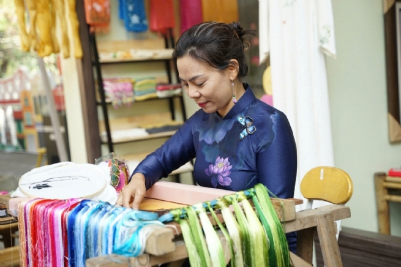
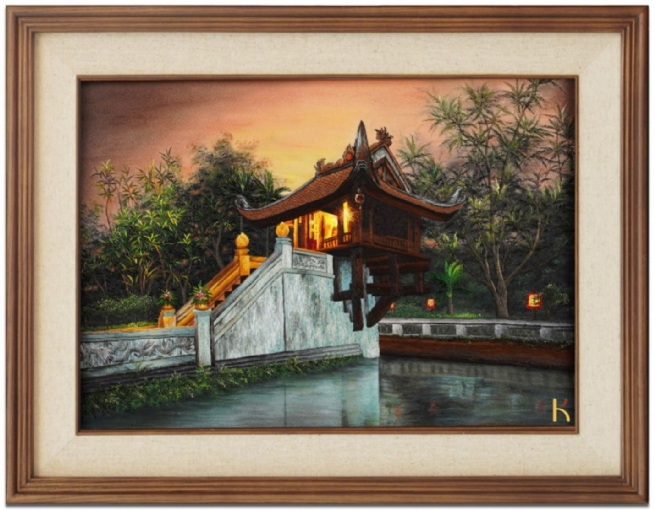
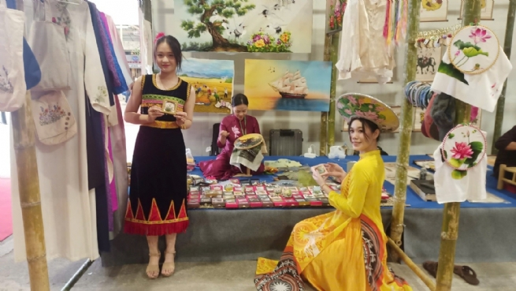

Bringing Traditional Hand Embroidery to the World
Born and raised in the cradle of the traditional embroidery village of My Duc district, Hanoi, understands better than anyone the soul, culture and uniqueness of hand embroidery. Over the years, artisan Nguyen Thi Hang has continued and promoted the profession of her ancestors. With the desire to bring traditional Vietnamese hand embroidery to the world.
The first artisan to bring painting into traditional hand embroidery
According to Ms. Nguyen Thi Hang, in modern society, although there are many new industrial products, the distinct value of traditional hand embroidery is the convergence of the quintessence of national culture through the skillful hands of the craftsman. Each stage is meticulously, carefully and carefully done down to the smallest detail so that the painting has a soul in it.
With the thought of preserving and developing the traditional profession, artisan Nguyen Thi Hang opened a painting shop on Nguyen Thai Hoc street - Hanoi. After more than 20 years of effort, perseverance and constant creativity, her paintings have spread to many countries in the European, North American, Japanese, Korean and Southeast Asian markets, not only because of their beautiful products and unique designs, but also because they carry the typical beauty of Hanoi's traditional craft villages.
By bringing paintings into embroidery, artisan Nguyen Thi Hang and her husband, a painter, have created a new and unique method. This is the method that makes Hang Khoa's products different. She confided: "The traditional hand embroidery profession not only requires meticulousness and dexterity in each needle and thread, but also requires the eye of an artist. The craftsman is also an artist to bring unique creations to the embroidery". What makes embroidery more special than other types of paintings is that it carries so much hard work and meticulousness. Each needle and thread, although simple and elegant, is actually extremely elaborate and skillful.
To create paintings, embroiderers sometimes have to spend months with many steps such as: drawing patterns, stretching the background, changing the style, choosing colored threads, and then embroidering. For paintings with artistic value, the embroiderer also has to practice hard and have an aesthetic sense. While embroidering, they also need to pay attention to and be meticulous with every detail, especially the curved or raised lines, the color transitions, etc., which all require sophistication in the use of techniques. Such as depicting images of water waves, sunlight, facial wrinkles, etc. are steps that require skillful hands to create smooth and natural color transitions. Therefore, each painting created is a work of art, containing the heart and effort of the embroiderer.
Preserving and conserving traditional crafts
According to artisan Nguyen Thi Hang, up to this point, her pursuit of embroidery is due to her passion and special love for the profession. The most wonderful thing about doing this job for her is helping future generations inherit, preserve, maintain and develop traditional crafts.
Restoring and developing the traditional embroidery craft in My Duc not only helps to solve the problem of employment, reduce poverty, serve production, consumption and export, but also contributes to preserving, conserving and promoting the national cultural identity. Therefore, she and her husband are determined to record videos of the embroidery paintings, from the first needle until the finished work, and upload them to the Youtube channel, both to preserve and for viewers to see the intricacy and value of a hand-made work. In addition, she and her husband are willing to teach the craft to the younger generation, participate in free classes to spread the love for traditional embroidery.
Honored to be an individual dedicated to preserving the quintessence of traditional hand embroidery in 2024, Hang Khoa Gallery's embroidery products were recognized by the Hanoi People's Committee as 3-star OCOP products at the city level. It is a precious honor for a child who always wants to keep the fire burning for the traditional hand embroidery craft to shine and develop.
Hang Khoa Gallery always carefully selects embroidery products, focusing on product quality. Therefore, when participating in the OCOP program, we understand more clearly and enhance our responsibility to standardize products, focus on the quality of embroidery products, innovate designs, update according to the market but still always rely on the cultural values that have been built before. The products not only help consumers use the function effectively but also preserve the traditional cultural values of My Duc embroidery," Ms. Hang shared.